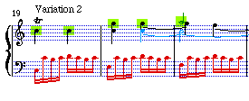

|
|
|
International Symposium on Music Information Retrieval
MUSIC IR 2000

Plymouth, Massachusetts
October 23-25, 2000
Interest in music information retrieval (music IR) is exploding. This is not surprising: music IR has the potential for a wide variety of applications in the educational and academic domains as well as for entertainment. Yet, until now, there has been no established forum specifically for people studying music retrieval.
Building upon research being conducted around the world, the International Symposium on Music Information Retrieval will be the first Music IR Symposium.
The resulting information interchange will enable scholars to move more quickly towards viable solutions to many problems. The conference will include both invited and submitted papers, plus a panel with live performance of musical examples on the piano. The keynote speaker will be Marvin Minsky, founder of the MIT Artificial Intelligence Laboratory and long-term member of the Computer Music Journal editorial Board.
|
|
News
|
The technical papers from the symposium have been posted. Abstracts and full-text submissions for invited speakers, accepted papers, and posters can be viewed. MUSIC IR 2000 attendee advance technical information for the symposium has been posted.
|
Organizing Committee
|
- Conference Chair: Donald Byrd, University of Massachusetts - Amherst
- Program Chair: J. Stephen Downie, University of Illinois at Urbana-Champaign
- Tim Crawford, Kings College, London
- W. Bruce Croft, University of Massachusetts - Amherst
- Craig Nevill-Manning, Rutgers University
Complete contact information for the symposium organizing committee.
|
Call for Papers
|
|
Camera-ready copy of accepted papers must be received by September 15. View submission instructions.
Mailing Address for Paper Submissions:
MUSIC IR 2000
CIIR, Department of Computer Science
140 Governors Drive
University of Massachusetts
Amherst, MA 01003-4610
|
|
Research Topics
|
Topics to be covered may include, but are not limited to, the following:
- Estimating similarity of melodies and polyphonic music
- Music representation and indexing
- Problems of recognizing music optically and/or via audio
- Routing and filtering for music
- Building up music databases
- Evaluation of music-IR systems
- Intellectual property rights issues
- User interfaces for music IR
- Issues related to musical styles and genres
- Language modeling for music
- User needs and expectations
|
Conference Deadlines
|
| | | |
|---|
| Thursday | June 22 | Research Papers Due
| | Tuesday | August 15 | Authors notified of committee decision
| | Friday | September 15 | Final submission of camera-ready copy
| | Saturday | September 23 | Hotel Registration Deadline
| | Monday | October 9 | Conference Registration Deadline
|
|
Conference Details
|
MUSIC IR 2000 Conference will be held at:
John Carver Inn
25 Summer Street
Plymouth, Massachusetts 02360 USA
Conference room rate: $91.00 (USD) plus taxes per room, per night for single/double occupancy. Queen/King 4 Poster rooms are available at $129.00 (USD) and Fireplace suites are available at $179.00 (USD). All room rates plus taxes per room, per night for single/double occupancy. Each additional person in the room will be charged $10.00 (USD) per person.
Individuals may make their own reservations by calling 1-800-274-1620 or
1-508-746-7100 and using the group code "MUSIC IR 2000" to receive the symposium rate.
Individuals are on their own for payment of room, tax and any
incidental charges. The John Carver Inn does NOT accept personal checks for payment.
ALL RESERVATIONS MUST BE MADE PRIOR TO THE CUT-OFF DATE OF SEPTEMBER 23, 2000.
After the cut-off date, reservations will be accommodated subject to availability. All reservations must be guaranteed for late arrival by a
valid credit card or an advance deposit.
Check-in time is 3:00 p.m. and check-out time is 11:00 a.m.
Directions to Plymouth Massachusetts, transportation details, and information on area attractions can be found here.
View the Music IR 2000 Brochure
|
Registration
|
| | | |
|---|
REGISTRATION
FEE | Early
(by 9/23/00) | Late*
(9/24 - 10/9/00)
| | Non-Student | $100 | $150
| | Student (full-time) | $60 | $100
|
*Registrations will not be accepted after October 9, 2000.
To register for the symposium, print and complete the registration form.
Registration fee includes attendance at the symposium events, evening reception on October 23, dinner on October 24, and breakfast, lunch and breaks on October 24 and 25. Accommodations are not included.
Registration cancellations must be received in writing by October 10, 2000 by contacting the MUSIC IR 2000 conference committee, CIIR, Computer Science Dept., 140 Governors Drive, University of Massachuestts, Amherst, MA 01003-4610, U.S.A. A US $20 cancellation fee will be charged.
|
Contact Information
|
Email: music2000@ciir.cs.umass.edu.invalid
|
|
|
Sponsored by Digital Libraries Phase II, National Science Foundation
|
|